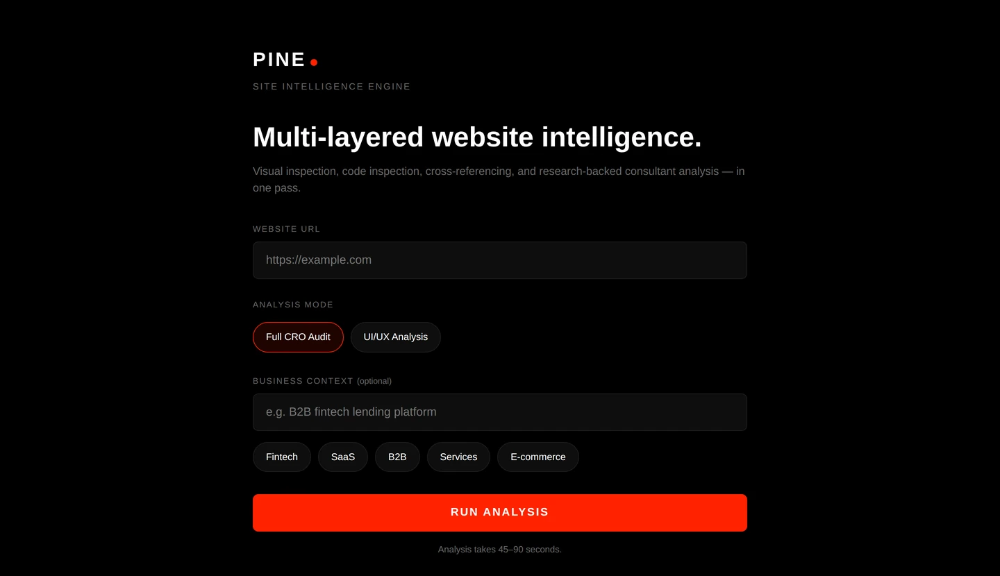
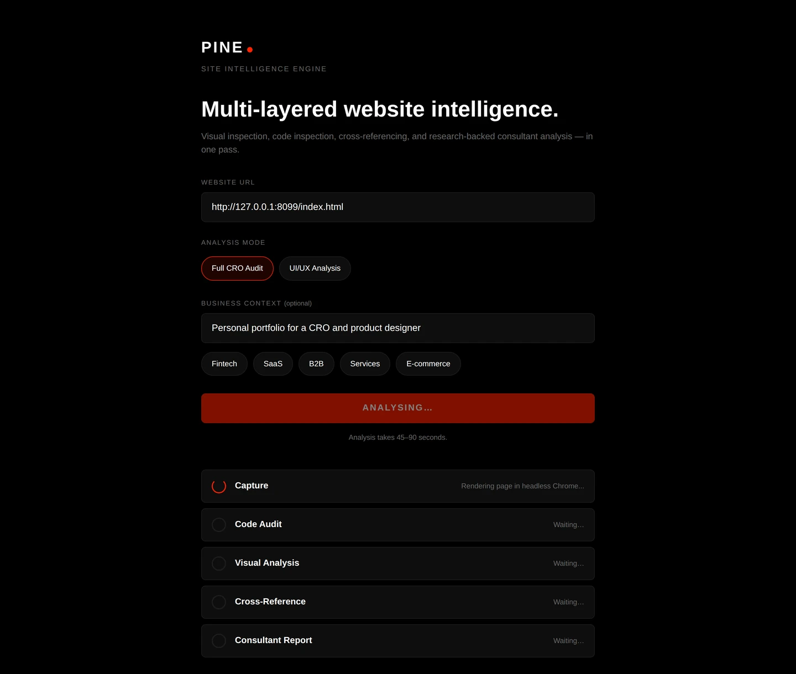

A CRO audit engine that is not allowed to state an opinion without a source
Pine takes a URL and returns a conversion audit. It renders the page in a headless browser, audits the markup and CSS programmatically, reads the rendered screenshots with a vision model, cross references the two layers against each other, and writes a report where every recommendation has to name the research or principle behind it.
Everything else on this site belongs to an employer or a client. This does not, which is why it is the second thing on the home page rather than the last.

The five stages, and why there are five
The obvious version of this tool is one call: send a screenshot to a vision model and ask what is wrong. That version produces confident, generic, unfalsifiable advice. Splitting it into a programmatic layer and a perceptual layer, then making them argue, is the whole point.
- 01Capture
- 02Code audit
- 03Visual audit
- 04Cross reference
- 05Report
Capture renders the URL in headless Chromium at 1440 by 900 and again at 390 by 844, extracts the post JavaScript HTML, pulls up to five external stylesheets while skipping font and CDN hosts, and records load timing and console errors. Long pages are captured as a series of viewport sized screenshots rather than one enormous image, because one enormous image exceeds the vision API's size limit and gets silently downscaled into uselessness.
The code audit calls no model at all. It parses the HTML with BeautifulSoup and the CSS with tinycss2, resolves custom properties, and computes WCAG contrast ratios from the relative luminance formula rather than trusting a library. It returns ten groups: structure, meta and SEO, images, forms, navigation, calls to action, trust signals, performance, colour contrast and accessibility. This is the half of the audit that cannot hallucinate.
The visual audit sends the screenshots to a vision model in a consultant persona and parses structured JSON, with all the section screenshots in a single multi image call so the model can see the page as a sequence rather than as unrelated fragments. Every scored item comes back as a score, an observation, a verdict and a detail.
The cross reference is the stage that justifies the architecture. It feeds both layers to the model and asks specifically for confirmations, gaps, contradictions and hidden issues. A form that looks simple but carries hidden fields. A page that looks mobile optimised but has no viewport meta tag. Social proof on screen with no schema markup behind it. As the docstring in the file puts it, the question is not whether there is an H1, it is whether the H1 looks prominent while reading as a brand tagline rather than a value proposition.

Three decisions I would defend in an interview
The scores are computed in Python, never by the model
UI out of 100 and UX out of 100, each broken into weighted criteria. Every point is derived from the structured JSON of the earlier stages, never from the narrative text. Colour and contrast is worth 15, and 5 of those 15 come from the measured ratio of failing contrast pairs to pairs checked. Conversion pathway is worth 20, and a form scores 5 at five fields or fewer, 3 at eight or fewer, and 1 above that.
The reason is reproducibility. If a language model assigns the number, the same site scores differently on Tuesday, and a client who reruns the audit after paying for the fixes cannot tell improvement from variance. This way the narrative can vary and the number cannot.
The fallback that makes a partial run still useful
If a vision call fails, the missing sub score falls back to 60 percent of its available points rather than zero. Zero would make one flaky API call look like a design catastrophe. Sixty percent keeps a partial run honest and comparable, and the report says which stages did not complete.
Every recommendation has to cite something
The report schema will not accept a recommendation without a research field naming the principle or benchmark behind it, and the tool carries a list of the ones it may cite: Nielsen Norman Group on the F pattern and the ten heuristics, Baymard on form abandonment, Hick's law on choice, Fitts's law on touch target size, the Fogg behaviour model, Formisimo on the cost of each additional field. Recommendations arrive ranked with a severity, a finding, the research, the action and the expected impact.
I built that constraint in because it is the thing I ask of myself. An audit that says the hero should be stronger is an opinion. An audit that says fourteen choices above the fold exceeds working memory, cites the source, and names the fix is a brief.
Failures are honest internally and calm externally
Full tracebacks go to the server log. The user sees one plain sentence explaining that the site may block automated browsers or failed to load. Async Playwright runs inside a background thread with its own event loop so the synchronous Flask server can stream progress at the same time, and a stage that fails degrades the report rather than killing the job.
What happened when I pointed it at this site
Running your own tool on your own work is the only version of this story worth telling, so I did it, and it found things.
-
No og:image, so the portfolio previewed as bare text everywhere it was pasted. On a site whose entire distribution is one link in a LinkedIn profile, that was the most expensive fault on the page.
fixed
-
A favicon still set to the accent colour of a design direction I had abandoned. The browser tab did not match the site.
fixed
-
No canonical tag and no structured data, so a recruiter search saw a page rather than a person.
fixed, ProfilePage and Person schema
-
Images all in JPEG and PNG with no next generation formats. The wireframes and tool screenshots on this site are now WebP.
fixed
-
Zero strong calls to action, because the keyword list behind that check does not contain the word hire. The rubric is wrong and the button is right, so I fixed the tool's blind spot in the write up rather than the copy on the page.
disputed, and not changed
-
Alt text coverage 89 percent. The one image without alt text is the portrait in the sidebar, deliberately empty because the text beside it already says my name. The tool counts an intentional empty alt as a missing one.
a real bug in Pine, not in the site
The last two are the useful ones. A tool that only ever agrees with you is a tool you have stopped reading.